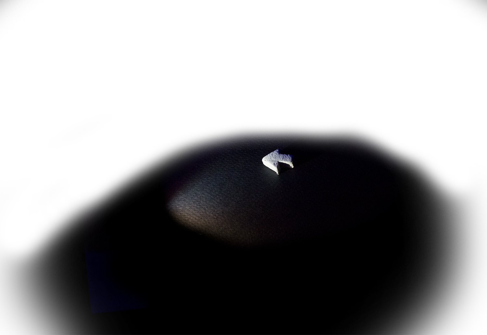
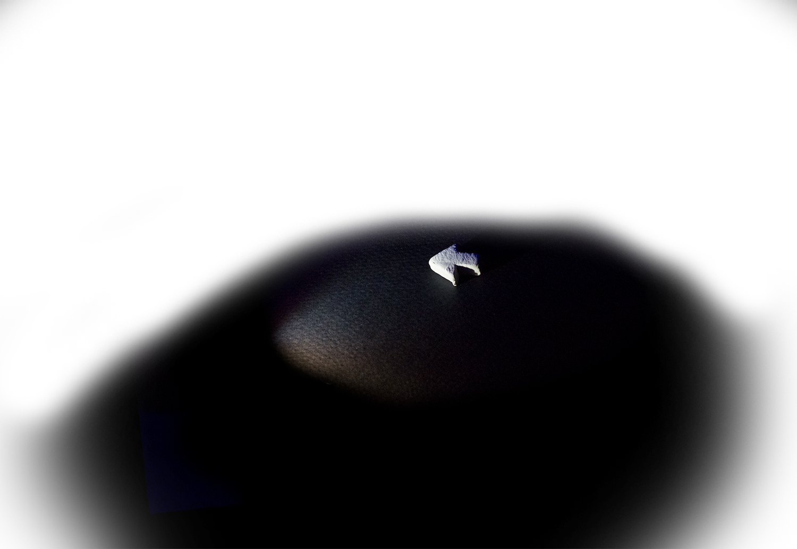
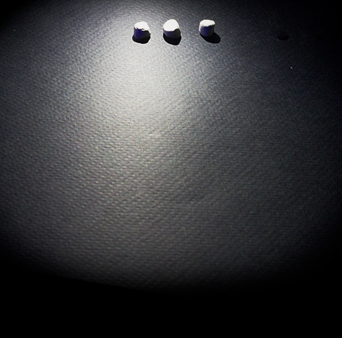
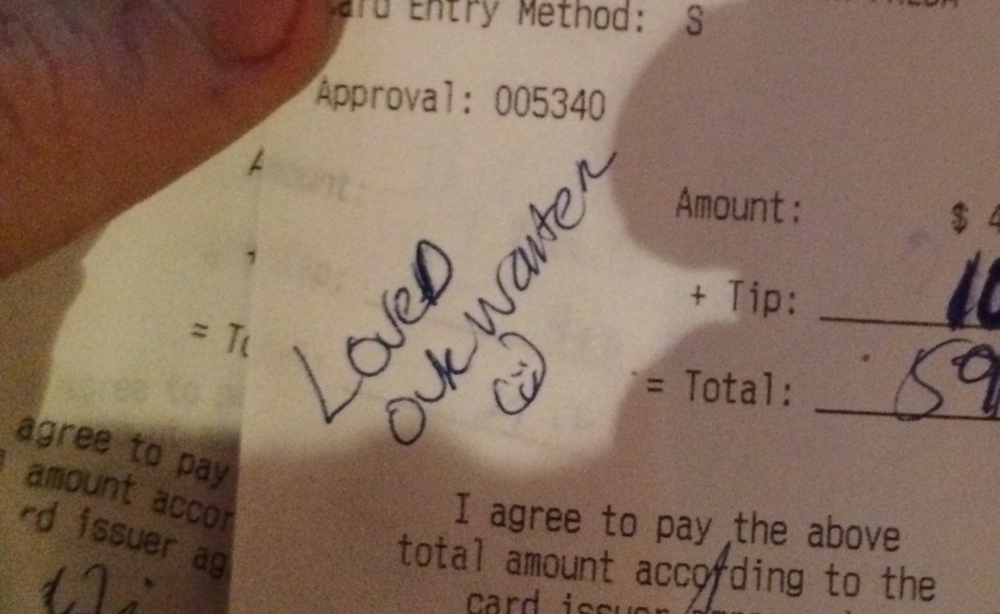
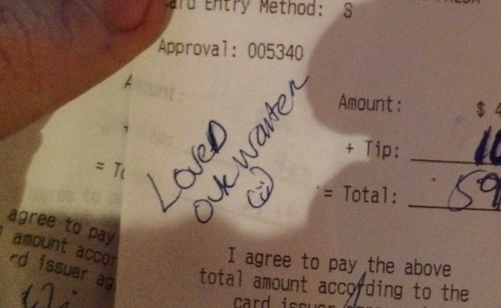

mensch
“Parting Gift” 2015
I've worked in the service industry for the past seven years. During that time I've come to value a certain mentality constant between my most admired colleagues. The word I use to pin it down is "mensch". It applies to a woman or man who takes pride in hard work, and supports the people who rely on them.
My position as a food runner at Alinea was without a doubt the most demanding I've ever held. The hours were brutal: twelve to twelve, five days a week. A fellow food runner once told me that we walked the equivalent of the Eifel Tower's steps every night. I'd like to believe that. In my first month there, I experienced a bit of a culture shock. Cafe Zola, where I worked back in Ann Arbor, had no Michelin stars, no Zagat rating, and no position on the San Pellegrino Top 50; Alinea had three, 40/40, 7th (in the world) - respectively. It was my job, when I was the newest hire, to polish our stars because "I had done the least to earn them". This was a militaristic work environment, and it was a daunting task to keep pace with my peers.
Alinea also exposed me to the world of contemporary American cuisine. It inspired me to cook on my own time, and to learn everything I could about the modern avant-garde chefs. That genuine excitement fed right back into my work - making me more confident around guests, more responsible for the food I was serving, and more energetic. It wasn't long before I imagined: what if I was doing this in a field I'm naturally passionate in? That's when I started looking for my first job outside the service industry, and when I set my sights on Laika.
I was concerned, when I put my two weeks in, that I had no metric with which to measure the effect of my work. I knew what pains I had gone to, but how to know if your best is good enough? On my last day, my colleagues gave me a gift, depicted below. It’s the most valuable thing I own. Not only is it a book full of all of the wonderful food and creativity Alinea represents, it’s a trophy: validating my ability to work hard and to remain accountable to my teammates.

There aren't many cathartic moments like this in one's work life. These tokens of appreciation are rare, and to seek them out would be to undermine the purpose of hard work. But when they do materialize, they carry a great deal of meaning. Below are a few others, less dear than the one above, but which act similarly as affirmation that I'm imparting - as a coworker and employee - the effect that I intend.
 
